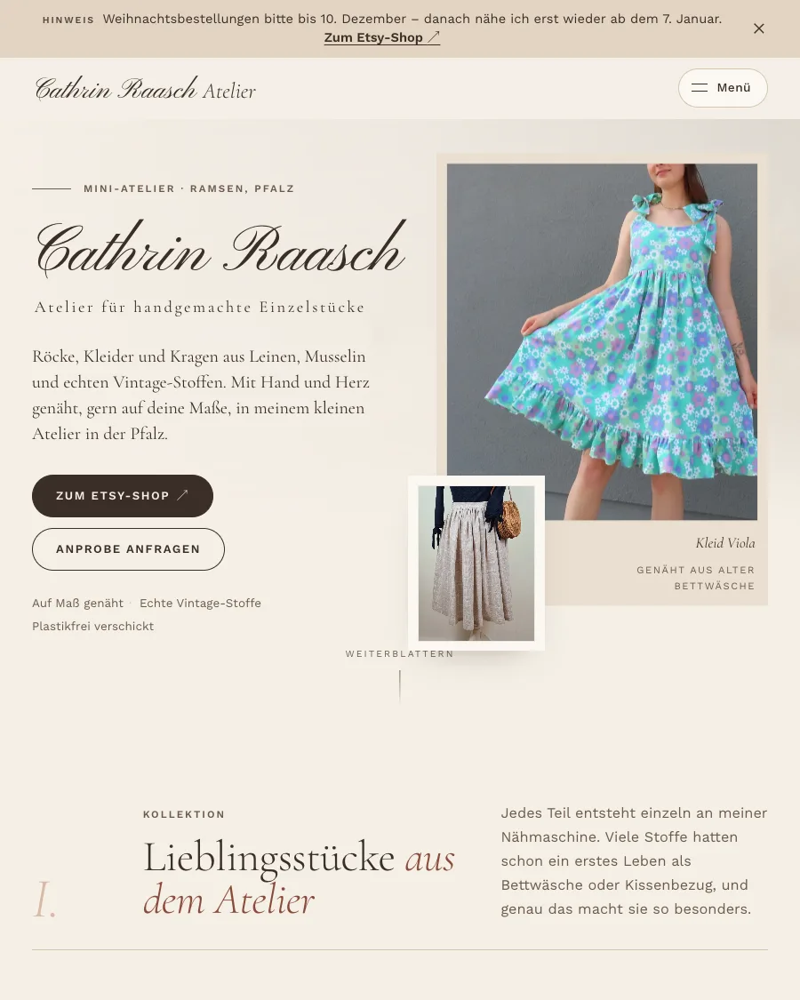
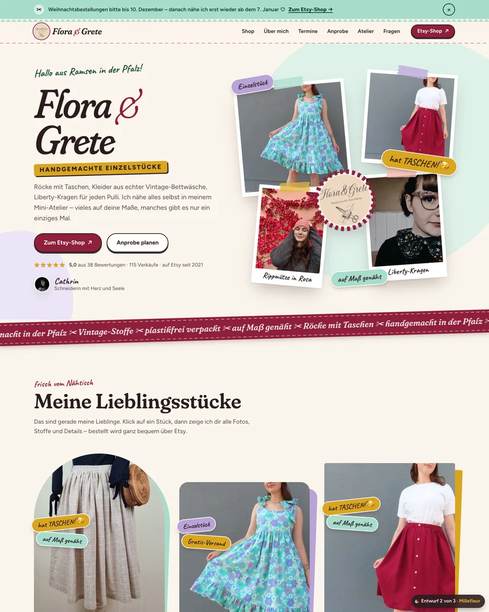

Website-Entwürfe · Klick-Prototyp
Drei Entwürfe für Flora & Grete
Liebe Cathrin, hier sind drei Ideen für deine eigene Website. Alle drei zeigen deine echten Stücke aus dem Etsy-Shop, haben einen Steckbrief über dich, einen Anprobe-Planer und eine kleine Verwaltung, in der du Hinweise, Termine und Links selbst pflegst. Klick dich in Ruhe durch und such dir aus, was sich nach dir anfühlt. Mischen geht natürlich auch.

Entwurf 1Leinen & Licht
Ruhig, warm und redaktionell, wie ein Magazin über langsames Leben. Viel Luft, große Fotos, feine Serifenschrift.
Entwurf ansehen →
Entwurf 2Millefleur
Fröhlich und handgemacht, wie deine Stoffschublade: Farben aus deinen Stoffen, Nähte, Zackenschere und kleine Sticker.
Entwurf ansehen → Entwurf 3
Entwurf 3Lookbook
Modern und reduziert wie ein kleines Modelabel. Die Fotos stehen ganz vorn, dazu klare Typografie und ein Lookbook zum Wischen.
Entwurf ansehen →Das steckt in allen drei Entwürfen
- Etsy-Shop im Mittelpunkt: alle 14 Stücke mit großen Fotos, Filter und Detailansicht, direkt verlinkt zu Etsy.
- Steckbrief „Über mich“ mit deinem Porträt und natürlich Struppi.
- Anprobe-Planer: Kundinnen fragen einen Termin in deinem Atelier an, du bestätigst ihn.
- Hinweis-Banner, z. B. „Heute geschlossen“ oder „Weihnachtsfrist“, mit einem Fingertipp ein- und ausschalten.
- Termine und aktuelle Links für Märkte, offenes Atelier und neue Stücke.
- Gut bei Google zu finden: saubere Struktur, Shop- und Produktdaten für Google, Google-Maps-Karte (datenschutzfreundlich erst nach Klick).
Deine Verwaltung
Hier änderst du Hinweise, Termine, Links, Anprobe-Zeiten und die Stücke, die vorne gezeigt werden. Alles ist sofort in allen drei Entwürfen sichtbar. Probier es aus: Öffne einen Entwurf in einem zweiten Tab und schalte den Hinweis um.
Verwaltung öffnen →Prototyp: Alles, was du einträgst, bleibt nur in diesem Browser gespeichert. Die Öffnungszeiten bei Google pflegst du in deinem Google-Unternehmensprofil, wie das geht, steht in der Verwaltung.